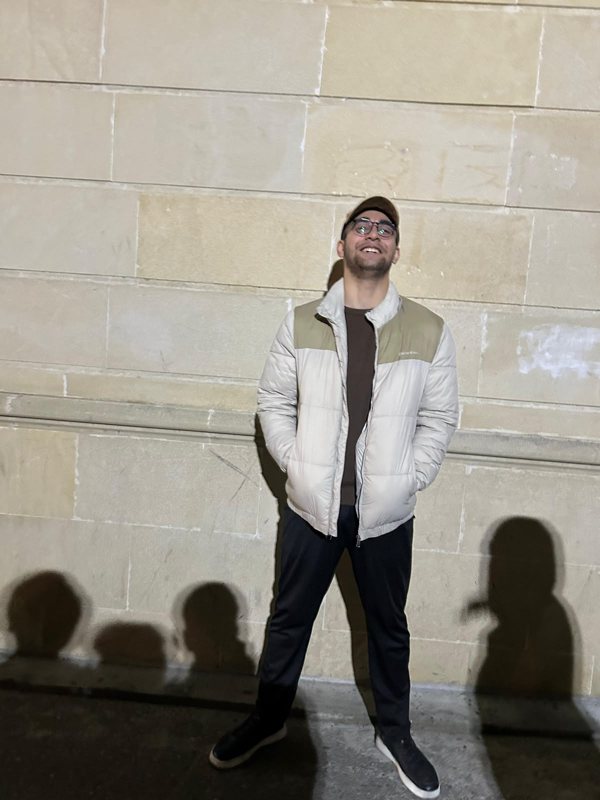
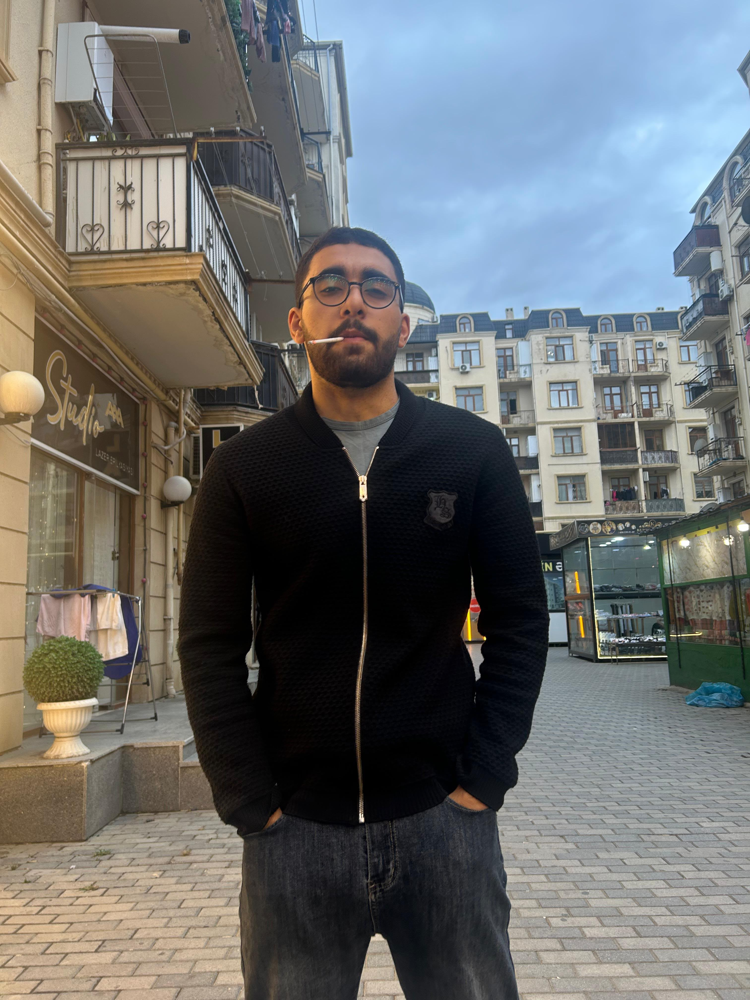

| Mənşəyi: | Talış |
|---|---|
| Böyüdüyü yer: | Xırdalan, Abşeron |
| Vəzifəsi: | Parkovşik |
| Mükafatları: | SKT Medalı |
| Abidələri: | Lerikdə Heykəli var |
| İş yeri: | Xırdalan Araz Market Önü |
Bu Gördüyünüz Şəxs Furqan Alışanov Anar oğludur o Əslən Talışdır və xırdalan Ərazisində böyüyüb Furqanın uşaqlıqı Adı kimi Furqan geçib O Uşaqlığında Məktəbdə çox Əziyyətlərlə qarşılaşıb Qoltug altı tərləmə problemlərinə görə Adətən Muəllimlər tərəfindən qaralanırdı Hamının Polis,həkim arzusu olduğu vaxtda Furqanın Tək arzusu Var idi O Ulubabasının izini Davam ettirərək Talış Muxtar respublikası yaratmağ istəyirdu Lakin Furqan Böyüdükcə Siyasətdən uzağlaşdı o Fizika kimya Fənlərinə marağ duydu və Global problem olan Sidiydə Qırmızılığ Probleminin həllini taparağ SKT ( sidiy Kanalı təmizlik) medalını qazandı Və Adına Lerikdə Heykəl ucaldıldı Gənc yaşlarında Bu Naliyətləri Qazanan Furqan hal hazırda Abseron rayonu Xırdalan Şəhərində Araz marketin Önündə Parkovşik Vəzifəsindədir Lakin o Xoşbəxtdir Sizdə Furqan Kimi xoşbəxt olmag Ücün vaxt itirmeyin Wp linkə Keçid ederek Xosbextliyin sirrini Furqan Alışanlıdan Öyrənin.

Furqan Alışanov[span_0](start_span)[span_0](end_span)
Siz də Furqan kimi xoşbəxt olmaq üçün vaxt itirməyin!
Xoşbəxtliyin sırrını Furqan Alışanlıdan öyrənmək üçün keçid edin:
💬 WhatsApp ilə Keçid Et